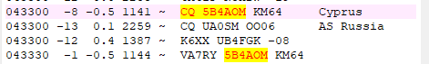

On Tue, Oct 10, 2023 at 10:28 PM Paul N6PSE <pauln6pse@gmail.com> wrote:
Al, they are using MSHV, a Bulgarian add on to FT8 software that allows multiple streams and somewhat emulates Fox/Hound without the requirement for Hounds to call above 1000 Hz. It is very common in EU and many EU DXpeditions are using it.There is also a feature called "Robot mode" where you can tell MSHV to answer callers while you shower or take a nap. I've seen a lot of evidence of robot mode lately.Paul N6PSEOn Tue, Oct 10, 2023 at 9:57 PM Al N6TA via Chat <chat@ncdxc.org> wrote:How do you call CQ and in the same sequence call someone?_______________________________________________
I could find no prior activity unless he was too weak to decode. Here is another:How do you call two different stations on different tones in the same cycle?I have a lot to learn (as usual!)Al
Chat mailing list
Chat@ncdxc.org
http://mail.ncdxc.org/mailman/listinfo/chat_ncdxc.org